This is an ongoing scientific project, so please check back regularly for updates. We describe how to design and build a module that converts a typical microscope into a high numerical aperture light-sheet microscope that uses only one objective at the sample. We intend it to be 'game changer' in the world of live cell imaging, greatly reducing phototoxicity without degrading image quality or breaking compatibility with existing sample preparation. Our method is compatible with coverslipped samples like slides, dishes and multiwell plates. The volumetric imaging performance is fast, gentle and high resolution, and the instrument is low cost and simple to align and maintain.
Visual abstract
Note: this illustrates the key concepts, and is not intended as a physically accurate schematic.
By combining and improving a series of optical innovations developed by many brilliant scientists
[Botcherby 2007,
Dunsby 2008,
Bouchard 2015,
Yang 2018,
Kumar 2018]
we can convert a standard microscope into a fast, gentle and high-resolution light-sheet instrument that works with standard coverslipped samples (Figure 1). Unlike any existing light-sheet microscope, we sacrifice no appreciable numerical aperture with no measurable loss in resolution, yielding a strict improvement over standard confocal microscopy, rather than a tradeoff.
Figure 1: A cartoon of the important concepts of the single-objective light-sheet design. A primary objective/tube lens pair (red solid line/circle indicates the back focal plane (BFP) of the objective) images a 3D biological sample to an intermediate space. A scanning system relays this 3D image to another intermediate space, where it is collected by a second tube lens/objective pair (blue dashed BFP). The secondary objective creates an aberration-free 3D copy of the sample at near-unity magnification. This virtual 3D sample is then re-imaged via a third, tilted, microscope (green dotted BFP) which tilts the primary image plane. A light sheet is coupled into the primary objective in this tilted image plane (red solid beam) yielding a single-objective light-sheet microscope. Moving a single scanning mirror rapidly acquires 3D volumes. The three objective BFPs are imaged onto each other as shown by the red solid, blue dashed and green dotted circles. The red solid disk indicates the light sheet footprint at the BFP, and the yellow solid region indicates the collection numerical aperture of the system. Our design sacrifices no appreciable amount of the yellow area, with no measurable loss in resolution.
We present a simple, low cost and robust reference design (Figure 2) with uncompromised spatio-temporal performance and provide design details for anyone to start building their own system (see the parts list). We also provide a general recipe to produce your own customized design.
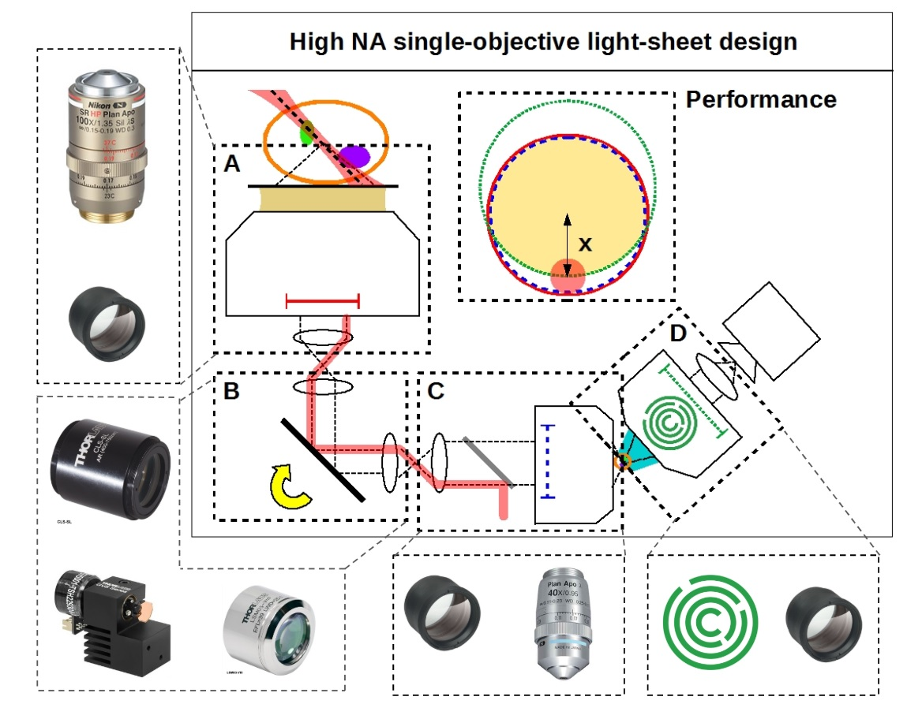
Figure 2: A visual breakdown of our reference design's components. Box A is a simple objective/tube lens pair, and can be a regular microscope stand. The primary objective is chosen for its high numerical aperture and intermediate index that is optimal for imaging deep into live biological samples at high resolution. Box B is a basic scanning relay with a single galvo mirror that can rapidly take volumes. Box C is another tube lens/objective pair that, together with box B, perfectly match the requirements of box A. Box D is yet another objective/tube lens pair, but this time the objective is a special component: the AMS-AGY objective.
Except for one lens, our designs use all stock components. All of the resulting opto-mechanical difficulties are solved by the single custom lens: the AMS-AGY objective.
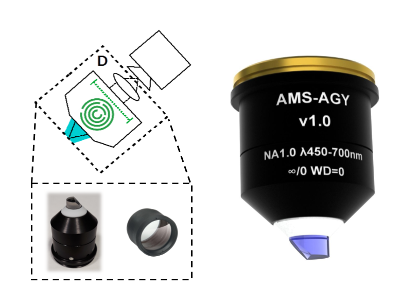
Figure 3: The AMS-AGY objective v1.0. A photo and CAD render of the special objective that resolves our opto-mechanical difficulties, enabling our design to deliver the full numerical aperture of the primary objective.
If you are interested in acquiring this objective, please contact Jon Daniels at Applied Scientific Imaging (ASI) directly: jon@asiimaging.com (or info@asiimaging.com). Note: the unit cost of this objective is a strong function of batch size; if enough labs express interest, ASI can commission a large batch, and the price per unit could be much lower.
Design options
Many applications benefit from different choices of magnification, numerical aperture, field of view (FOV) and immersion medium (e.g. water). Here we outline some attractive configurations with various choices of primary objective and scanning methods. We have not fully simulated or tested these designs, but based on our experience we expect them to have excellent performance. Please see alternative optical configurations in the appendix for more details.
Primary objective choices
We have configurations for the following primary objectives:
Supplier
Mag (NA)
Immersion (use)
W.D. (mm)
Part
Nikon
60x (1.4)
Oil (coverslip)
0.13
MRD01605
Nikon
100x (1.35)
Silicone (coverslip)
0.28-0.31
MRD73950
Nikon
40x (1.25)
Silicone (coverslip)
0.30
MRD73400
Nikon
25x (1.05)
Silicone (coverslip)
0.55
MRD73250
Nikon
60x (1.27)
Water (coverslip)
0.16-0.18
MRD07650
Nikon
40x (1.15)
Water (coverslip)
0.59-0.61
MRD77410
Nikon
25x (1.1)
Water (dipping/coverslip)
2.00
MRD77220
Olympus
60x (1.42)
Oil (coverslip)
0.15
UPLXAPO60XO
Olympus
100x (1.35)
Silicone (coverslip)
0.20
UPLSAPO100XS
Olympus
60x (1.3)
Silicone (coverslip)
0.30
UPLSAPO60XS2
Olympus
40x (1.25)
Silicone (coverslip)
0.30
UPLSAPO40XS
Olympus
30x (1.05)
Silicone (coverslip)
0.80
UPLSAPO30XS
Olympus
60x (1.2)
Water (coverslip)
0.28
UPLSAPO60XW
Olympus
40x (1.15)
Water (coverslip)
0.25
UAPON40XW340
Olympus
25x (1.05)
Water (dipping/coverslip)
2.00
XLPLN25XWMP2
Olympus
20x (1.0)
Water (dipping)
2.00
XLUMPLFLN20XW
Field of view and scanning regimes
A single exposure of our camera captures a (tilted) 2D FOV. Modern sCMOS chips are large enough that our 2D FOV is typically limited by the length of the light-sheet along the "propagation" axis, and the FOV of the primary objective on the "sheet-width" axis. We image 3D volumes by scanning this 2D FOV through the sample. Moving the sample with a stage gives modest velocity and very low acceleration, but an enormous range of scan positions. Moving the FOV via a galvo limits the range of scan positions to the FOV of the primary objective, but can give effectively "instantaneous" scan velocity and acceleration (step-and settle times faster than the rolling time of our sCMOS chip).
Examples of practical scannning configurations:
1D galvo scanning (default): For most applications, we recommend one scanning galvo as shown in our reference design. The 3D FOV (scanned at the data rate of the camera) is set by the primary objective in the scan direction, the tertiary objective on the "sheet-width" axis, and (typically) the length of the light-sheet on the "propagation" axis.
2D galvo scanning (recommended for large FOV): adding a second galvo-scanned direction gives agile access to the full FOV of the primary objective (but requires extra emission-path optics and control electronics). This is especially attractive when the FOV of the primary objective is much larger than the FOV of the tertiary objective.
No galvo scanning: If you're sure you'll never want high volumetric frame rates, you can scan your sample through the 2D FOV via a stage. This allows the simplest emission path, but requires careful integration between the stage and the control software. Beware that many non-rigid samples don't tolerate acceleration (e.g. see figure 8 of
[Millett-Sikking 2018]).
Z-piezo on the secondary or tertiary objective: if you're good at synchronizing mechanics, you can achieve agile scanning with minimal emission-path optics. For example, 1D galvo scanning in the excitation path and synchronized axial piezo scanning on the secondary objective can scan 3D FOVs at the data rate of the camera. Note that this scans in the axial direction of the primary objective, which typically yields a smaller 3D FOV than the lateral scan of our reference design.
Of course, all the above approaches allow conventional focusing within the working distance of the primary objective, and tiling within the range of the system's XY stage.
Initial results
We've built, aligned and tested the emission path of our high numerical aperture single-objective light-sheet reference design. Our results show we can image a 30 degree tilted plane with no measurable loss in resolution compared to a conventional microscope with the same primary objective:
Our Nikon-based remote refocus gives the same resolution as a conventional microscope: Using all Nikon objectives, the remote refocus portion of our emission path delivers at least 270 nm resolution at the centre of the field of view. This is the same resolution given by the primary objective on a standard commercial base. This is also consistent with our previous work where we achieved at best 240 nm resolution (270 nm typical) using an index-matched NA = 1.4 oil immersion objective with noil = nArgolight = 1.525
[Millett-Sikking 2018].
Here we use the slightly lower NA = 1.35 silicone objective with index nsilicone = 1.40 that is more appropriate for live biological samples (and is therefore expected to underperform a little with the Argolight slide).
Our AMS-AGY-based remote refocus also gives the same resolution as a conventional microscope: Substituting the AMS-AGY v1.0 objective for the third Nikon objective preserves 270 nm resolution in a conventional (untilted) remote refocus.
Our AMS-AGY emission path still gives the same resolution as a conventional microscope with a 30 degree tilt: using the AMS-AGY objective we tilt the third microscope to an angle of 30 degrees and retain the <270 nm resolution on both parallel and perpendicular axes.
We interpret these results as a clear demonstration that our design isn't just theoretical, and enables a single-objective light-sheet microscope without sacrificing any measurable resolution. By the Rayleigh criterion, 270 nm resolution corresponds to an effective NA of at least 1.2. This is consistent with our Zemax simulations of real lenses which rarely reach the full resolution predicted by ideal models.
Preliminary data
Purpose and experimental setup
The aim of this section is to rapidly release data that demonstrates the optical performance and potential of this microscope. The emphasis is on speed of delivery and transparency of information, rather than polish or completeness. Both data and analysis will be updated and improved as needed. Feedback is welcome and can be sent directly to the authors.
We arrange the optics as per the parts list. For speed, robustness and convenience we image the Argolight SIM slide with 488 nm laser excitation in a simple epi configuration. Coherent interference/speckle from the 488 laser source is present throughout the data and was tolerated to avoid delays. An additional Chroma ET525/50 emission filter was added immediately before the quad filter (item 12) to tighten up the emission band that is otherwise extremely broad. We acquired image stacks by using a closed loop piezo actuator at the secondary objective. The XY stage, primary objective, galvo and tertiary objective remained stationary during acquistion, and the camera exposure time and laser power were kept constant thoughout.
Optical configurations and data types
To benchmark the emission path and evaluate the new objective lens we acquired data in three configurations:
Nikon 40x 0.95 NA, tilt = 0°. Substitute the tertiary objective in the emission path for a Nikon 40x 0.95 NA air objective in a standard remote refocus arrangment (axially aligned with no tilt). We have detailed experience with both remote refocus and this objective lens so this setup provides a reliable system benchmark
[Millett-Sikking 2018].
AMS-AGY v1.0, tilt = 0°. Use the new objective with no tilt and compare directly to configuration 1.
AMS-AGY v1.0, tilt = 30°. Use the new objective with a tilt of 30 degrees and compare to configurations 1 and 2. This is not necessarily the optimal choice of angle, but conveniently comparable to previous implementations of similar technologies.
To explore the new lens we selected 4 different patterns on the Argolight SIM slide:
Target: a 240 μm diameter set of concentric rings with a 10 μm spacing. Each ring consists of two line pairs separated by 750 nm (good for looking at the maximum field of view).
Grid: a 110x110 μm2 square grid with 10 μm spacing. Each line pair is separated by 750 nm (good for looking at the central higher-quality portion of the field of view and checking for field flatness and distortion).
SIM lines: 14 line pairs that range from fully overlapped to a separation of 390 nm in 30 nm steps (good for evaluating resolution).
3D rings: 9x9x9 3-dimensional cubic array of submicron-diameter rings separated by 5 μm in X, Y, and Z (good for evaluating a 3D field of view).
Data
We now present the data for each of the 3 configurations, imaging the patterns and features as described in each case. The figures are interactive and have been (minimally) processed for the purposes of viewing. How each figure was generated from the raw image stack is detailed in an associated readme.txt file linked in each figure caption. Key processing steps are highlighted in each figure caption for ease of interpretation.
AMS-AGY vs Nikon, tilt = 0°
Optical configuration 1 vs 2: the figures are interactive so be sure to toggle through the various options to see all the data.
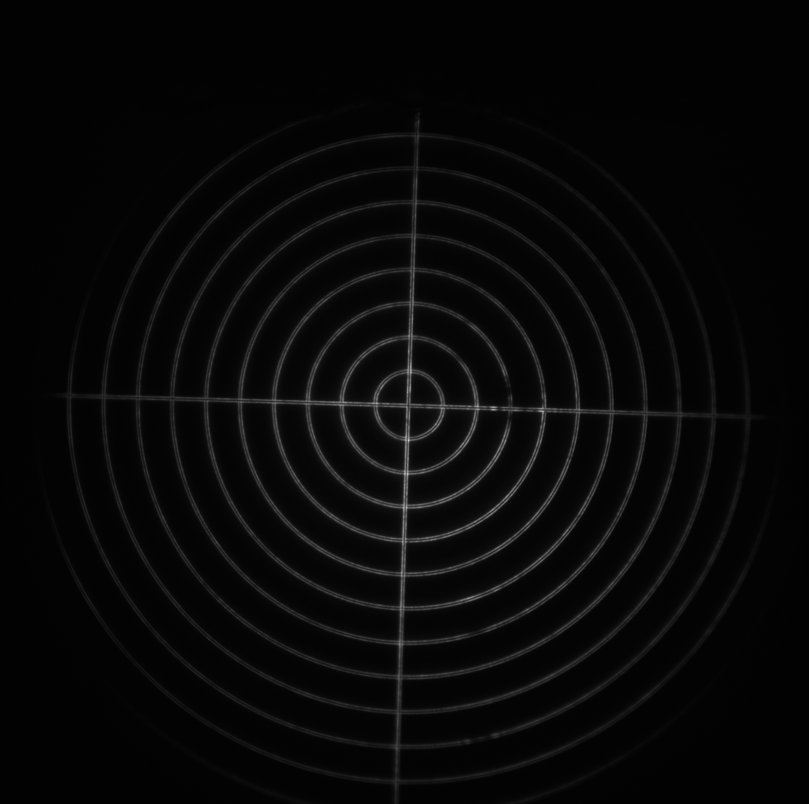
Image = Target
Objective =
(brightness scale)
Figure 4: Target image comparing the AMS-AGY v1.0 objective with the Nikon 40x 0.95 NA objective (no tilt). This figure shows the ~240x240 μm2 field of view covered by our camera sensor, with line pairs visible to the ~10th ring (~200 μm) in both optical configurations (1 & 2). Note that this is well beyond the ~100 μm diameter field of view we designed for. The illumination shows interference patterns from the coherent 488 nm epi excitation and is slightly off-centre (as seen in the saturated image). Note that the saturated image also shows the ground edge of the AMS-AGY v1.0 objective at a distance of ~125 μm from the centre (as designed). For data processing see the readme.txt.
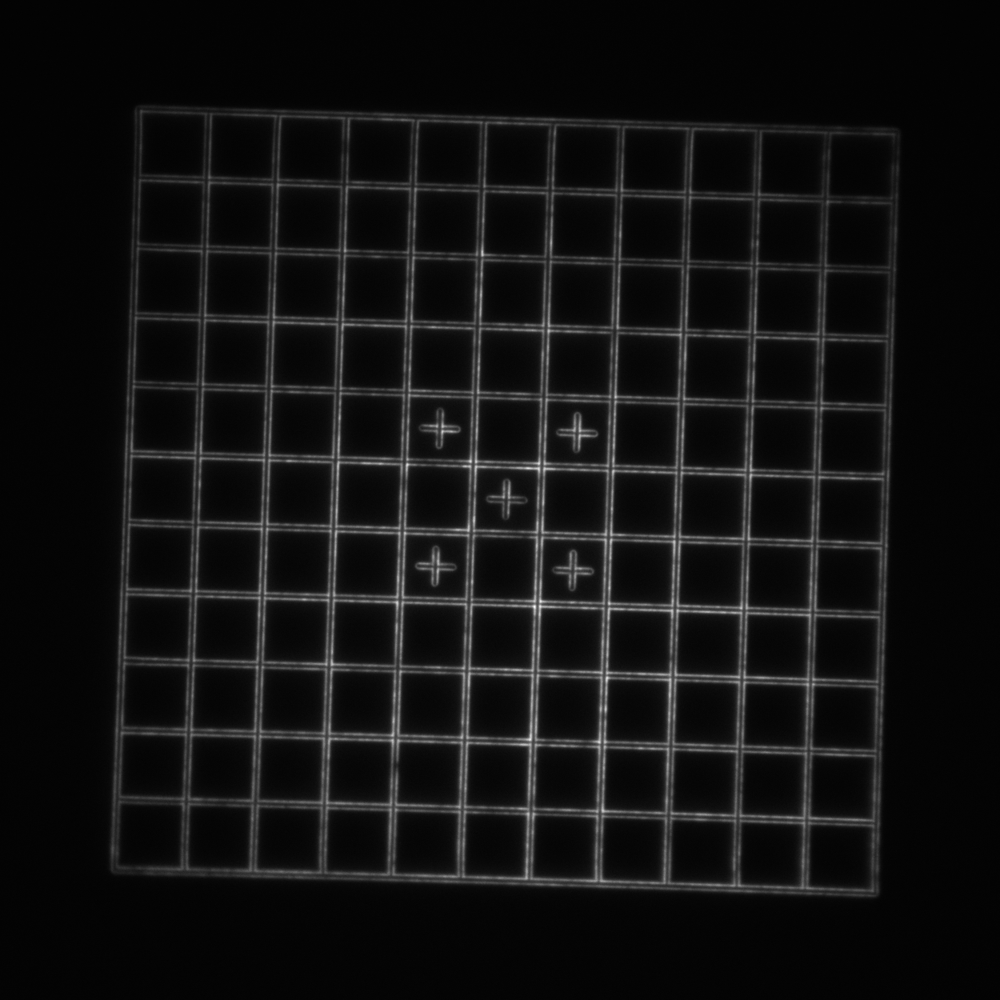
Image = Grid
Objective =
(brightness scale)
Figure 5: Grid image comparing the AMS-AGY v1.0 objective with the Nikon 40x 0.95 NA objective (no tilt). This 145x145 μm2 image shows a high quality 110x110 μm2 field of view, with line pairs clearly visible throughout and minimal distortions. For data processing see the readme.txt.
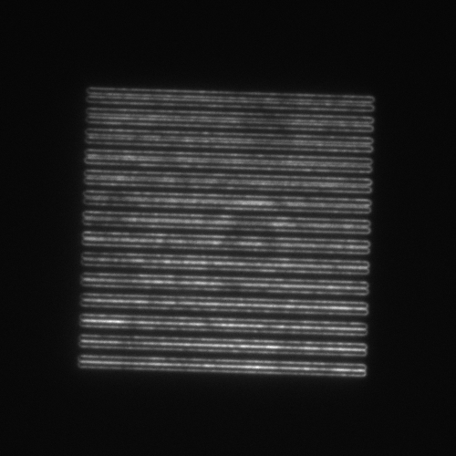
Image = SIM lines
Objective =
(brightness scale)
Piezo position =
(μm)
Figure 6: SIM lines image stack comparing the AMS-AGY v1.0 objective with the Nikon 40x 0.95 NA objective (no tilt). This 58x58 μm2 image shows a resolving power of at least 270 nm on the centre of the field of view of the remote image for both configurations 1 and 2. This can be seen by focusing the image and counting down from the top rung (line pairs are clearly separable until at least the 5th rung). For data processing see the readme.txt.
Image = 3D rings
Objective =
(brightness scale)
Figure 7: 3D rings image stacks comparing the AMS-AGY v1.0 objective with the Nikon 40x0.95 objective (no tilt). This shows the 3D imaging capability of the remote refocus, and that the two objectives are qualitatively indistinguishable over this 3D field of view. The cubic grid of submicron-diameter rings occupies a 40x40x40 μm3 volume. For data processing see the readme.txt.
AMS-AGY 30°
Optical configuration 3: note that the Nikon objective is incapable of tilting past ~6°, so we only show data for the AMS-AGY v1.0 objective. The figures are interactive, so be sure to toggle through the various options to see all the data.
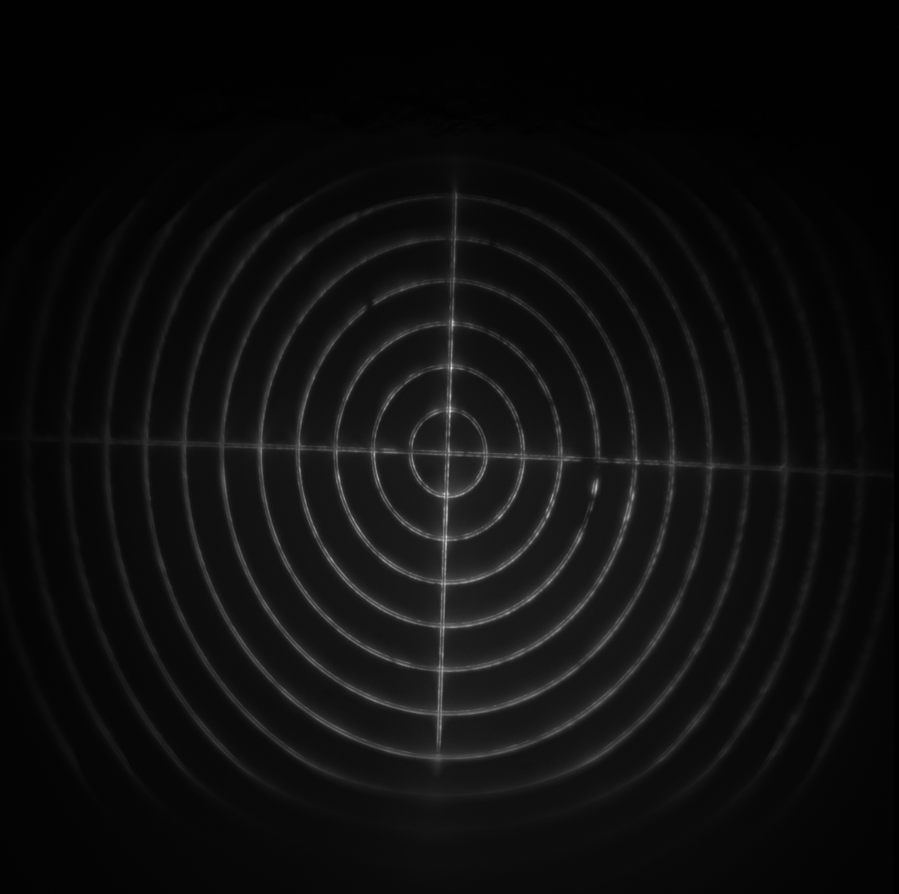
Image = Target
Data type =
(brightness scale)
Figure 8: Target image stack using the AMS-AGY v1.0 objective with a 30° tilt. This ~240x240 μm2 image shows a maxiumum-intensity Z-projection of a tilted image stack of the remote field of view. The illumination shows interference patterns from the coherent 488 nm excitation and is slightly off-centre (as seen in the saturated image). Note that without any transformation, the raw projection shows the target 'stretched' along the Y-axis due to the tilt of the objective. Re-scaling this axis by \(y \cos{(\alpha)}\) (= 0.866 for 30°) restores the image to its correct scale (where α is the tilt angle). Again, the saturated image shows the ground glass edge of the AMS-AGY v1.0 objective (as designed). For data processing see the readme.txt.
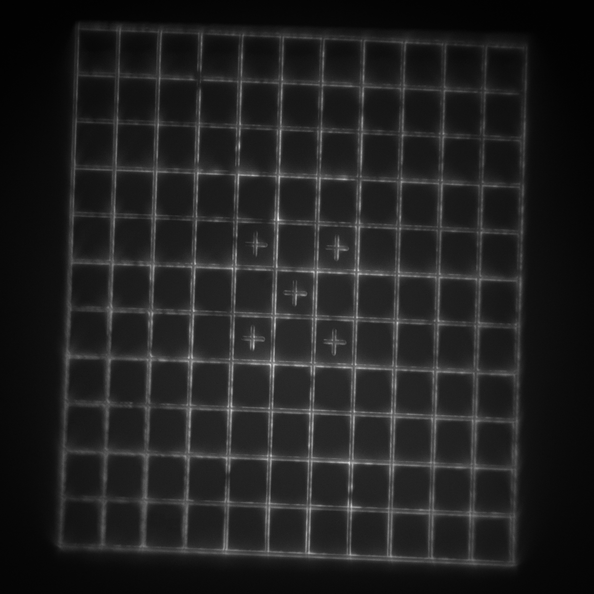
Image = Grid
Data type =
(brightness scale)
Figure 9: Grid image stack using the AMS-AGY v1.0 objective with a 30° tilt. This 145x145 μm2 image shows how moving the piezo on the secondary objective sweeps the 3D remote image across the image plane of the tertiary objective. Taking a maximum-intensity Z-projection shows how the image is stretched on the Y-axis (like the target example above). Re-scaling by \(y \cos{(\alpha)}\) restores the image to its correct shape and shows a high-quality 110x110 μm2 field of view with clearly visible line pairs and minimal distortions. For data processing see the readme.txt.
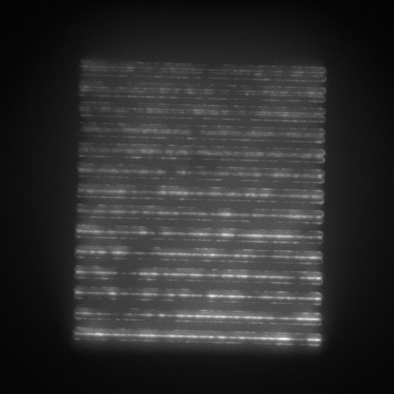
Image = SIM lines
Data type =
(brightness scale)
Figure 10: SIM lines stack using the AMS-AGY v1.0 objective with a 30° tilt. This 58x58 μm2 image shows how moving the piezo on the secondary objective sweeps the 3D remote image across the image plane of the tertiary objective. The image is stretched on the Y-axis (like the target and grid example above). However either by pausing the stack video or taking a maximum Z-projection on this raw data it is clear that the system maintains a resolving power of 270 nm in both orientations, even with the 30° tilt on the objective. The tilt axis is defined by the axis of rotation of the third microscope. For data processing see the readme.txt.
Image = 3D rings
Data type =
(brightness scale)
Figure 11: 3D rings image stack using the AMS-AGY v1.0 objective with a 30° tilt. This shows the 3D imaging capability of the remote refocus using the tilted AMS-AGY v1.0 objective. This 3D view shows that the image is both stretched on the Y-axis (as seen previously in the max Z-projections) and also sheared in the Z-axis. Applying the \(z \sin{(α)}\) shear correction together with the \(y \cos{(\alpha)}\) stretch correction restores the 3D pattern to its original shape, at which point it is qualitatively indistinguishable from the untilted configurations. The (transformed) cubic grid of submicron-diameter rings occupies a 40x40x40 μm3 volume. For data processing see the readme.txt.
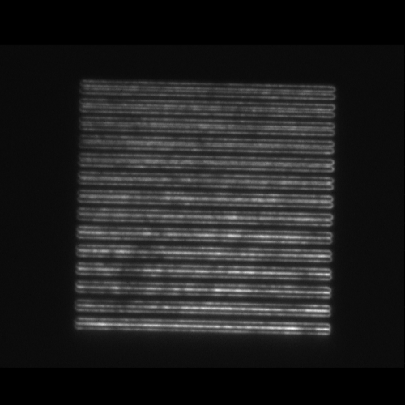
Image = SIM lines
Tilt axis orientation=
(brightness scale)
Piezo position =
(μm)
Figure 12: SIM line image stacks from the AMS-AGY v1.0 objective with a 30° tilt. Here the image stacks have been transformed from the raw stacks (Figure 10) back into the usual X, Y, Z coordinate system of the primary objective/sample. The transformations are purely theoretical \(z \sin{(α)}\) shear correction and \(y \cos{(\alpha)}\) stretch corrections (as shown in Figure 11). These data show a resolving power of ~270 nm on the centre of the field of view of the remote image in both orientations (parallell and perpendicular to the tilt axis). This can be seen by focusing the image and counting down from the top rung (line pairs are clearly separable until at least the 5th set). Note: the tilt axis is defined by the axis of rotation of the third microscope and the SIM pattern dimensions are 36x36 μm2. For data processing see the readme.txt.
Preliminary examples of biological imaging
Single objective lightsheet (SOLS) at UTSW
We're proud and happy to report that Kevin Dean and Reto Fiolka's teams at UT Southwestern have built a single-objective lightsheet microscope incorporating an AMS-AGY v1.0 objective, and they've used this microscope to image a variety of biological samples. This is our favorite example of collaboration, peer review, and technology dissemination, all rolled into one. We look forward to their future publication; in the meantime, please contact Reto or Kevin for details of this implementation. See below for their reported results.
Biological 3D imaging with the SOLS microscope (R.F. and K.M.D.)
We have tested the SOLS microscope on a variety of biological samples. To evaluate the optical sectioning performance, we imaged retinal pigment epithelial (RPE) cells labeled with GFP vimentin. Figure 13 shows the raw stack as acquired by the microscope. One can see that the dense vimentin fiber bundles are well sectioned and very little background is present.
Figure 13: "Flythrough" of raw slices of an RPE cell labeled with GFP-Vimentin.
Viewing the data this way might be unfamiliar to a user accustomed to standard epifluorescence microscopes (e.g. a spinning disk). As illustrated in Figure 1, one slice is imaged at a time, at a shallow angle to the coverslip. A maximum-intensity projection (after the data has been sheared as described in Figure 8) gives a more conventional impression of the cell, as shown in Figure 14.
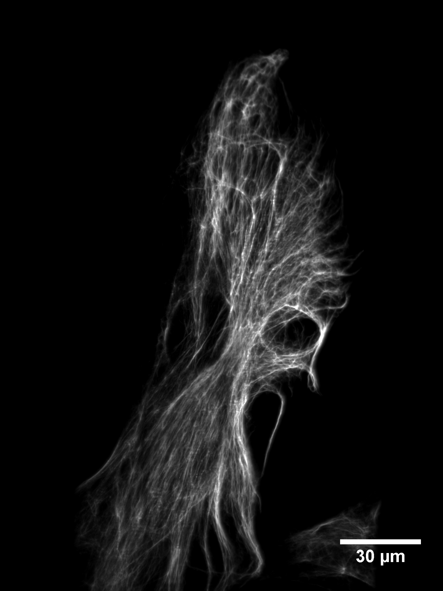
Figure 14: Maximum intensity projection of a RPE cell labeled with GFP-Vimentin.
To test our ability to measure fast intracellular dynamics, we imaged clathrin-mediated endocytosis in RPE cells. For this purpose, the cells were labeled with clathrin light-chain eGFP
[Ehrlich 2004].
We set the exposure time of the camera to 5 ms and acquired 501 z-slices for each timepoint, resulting in a volumetric acquisition time of 2.5 s. While the microscope can acquire much faster owing to the galvo z-scan shown in Figure 1, this slower acquisition speed allowed us to acquire continuously for more than two minutes with only moderate photobleaching. Figure 15 shows a flythrough of a deconvolved z-stack. One can observe clathrin coated pits both on the ventral and dorsal side of the cell. Figure 16 shows a movie of the same cell over 50 timepoints.
Figure 15: Deconvolved slices through a group of RPE cells labeled with clathrin light-chain eGFP.Figure 16: Maximum intensity projection of RPE cells labeled with clathrin light-chain eGFP. Data were sheared as described in Figure 8, and iteratively deconvolved.
Finally, to demonstrate the ability to image cells in physiologically relevant micro-environments away from stiff surfaces, we embedded MV3 cancer cells
[van Muijen 1991]
expressing an eGFP AKT-PH biosensor
[Haugh 2000,
Welf 2012]
in fluorescently labeled collagen (Alexa 568). Figure 17 shows a rendering of a group of MV3 cells in collagen. The color coding of the surface is representative of the local curvature of the cells.
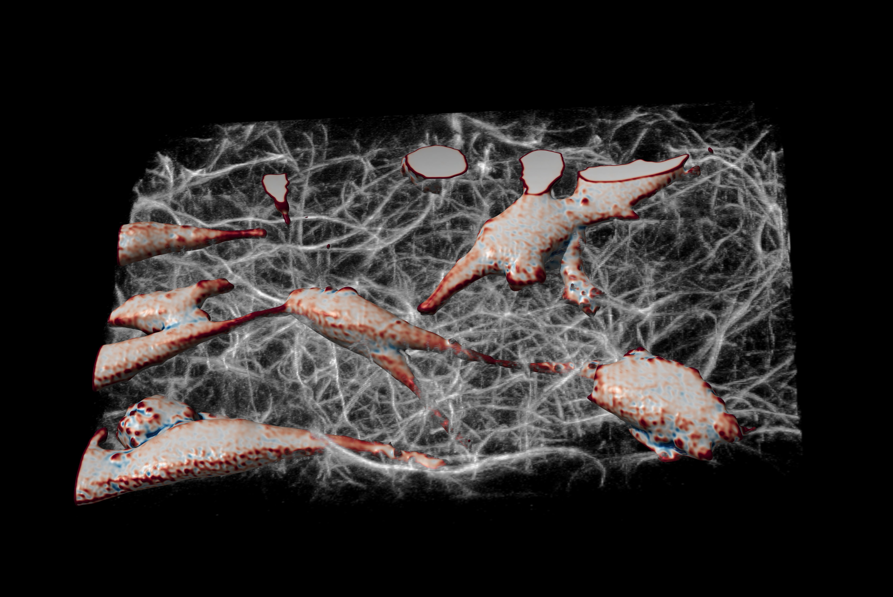
Figure 17: Rendering of MV3 cells expressing AKT-PH biosensor in fluorescently labeled collagen.
Acknowledgements
A.M.S. and A.G.Y.
This work was funded and supported by Calico Life Sciences LLC and we would like to acknowledge the fantastic research environment that has been created here by the senior staff. We have enjoyed a spectacular level of freedom and support that has made this work possible.
In addition we thank the business development team at Calico for pursuing and arranging our external collaborations. In this regard we would like to specifically acknowledge our collaborations with Nikon and Special Optics who have enabled our high-quality design and we look forward to future projects with these partners.
K.M.D. and R.F.
We would like to thank Rosa Mino for providing the RPE CLCa-eGFP cells and Erik Welf for preparing the MV3 cancer cell sample. We are further grateful to Meghan Driscoll for rendering the MV3 and collagen data.
L.W.
I would like to thank the Centre for Dynamic Imaging at the Walter and Eliza Hall Institute for using their rendering hardware, and in particular Kelly Rogers for enabling me to pursue this collaboration.
Additional details and discussion can be found in the appendix.
Author contributions
K.M.D. and R.F. contributed the "Preliminary examples of biological imaging" section. A.F. and Special Optics Inc. (a Navitar Company) designed and assembled the AMS-AGY v1.0 objective under contract with Calico, according to specifications requested by A.M.S. and A.G.Y. L.W. contributed the "Visual abstract" section. A.M.S. and A.G.Y. contributed the other sections.